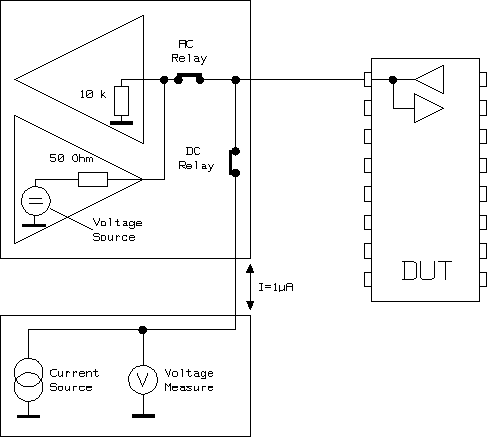

DVM
This test method measures the voltage at any pin. To measure the value of a voltage source, the test method puts the PPMU into the current force/sink mode at the lowest possible current. This causes the PPMU to act as a voltmeter.

The test method programs a low current limit of 1 uA on each PPMU. Measurements are taken on all pins in the pin list in parallel. Test result is pass when:
pass min value <= measured value <= pass max value
After the test, the test system is left in the CONNECTED state.
For PPMU parallel test, the PPMU clamp voltages will be set to +/-0.1V.
This test method supports test table. But you need to enter the test names manually in the parameter. You can use both test table and testflow limits in a testflow. The test table has higher priority than testflow limits. If a test name used in the test flow is defined in both test table and testflow limits, the value defined in the test table will be used.
Dependencies
- AC relays are always closed. Depending on the break state, this could affect pin measurements. Therefore the measured pins must be kept stable during the test.
- When using o pins only, the total DUT output current is the current sourced/sunk (1 µA) by the PMU and the input resistance of the comparator.
Parameters |
Type |
Description |
|---|---|---|
pinlist |
PinString |
Pins to be measured. This can be @ for all applicable pins, or any number of applicable single pins.Valid pin types include: I, O, IO. |
settlingTime |
SpecValue |
settling time. The settling time will be in addition to the settling time calculated by the system. It is in the format of "value[unit]". The default value is "0[ms]". |
measureMode |
string |
Measurement mode. It can be PPMUpar: measure the voltage via PPMU in parallel BoardADC: measure the voltage vid board ADC. |
testName |
string |
The test names to be used as limits. Default is
If you want to use the test names defined in the test table or testflow limits, type in the test names manually. Make sure the test names are in the Test name column of the test table (Refer to Structure of a TMLimits CSV file) or in the Test Name column of Tests page of Flow Data Editor. |
ACRelay (only available for BoardADC mode) |
string |
For BoardADC measurement mode, control whether to turn on the AC relay during the measurement. It can be ON or OFF. Default is ON. |
output |
string |
Controls how to output the per pin test result. It can be:
ShowFailOnly: Only outputs the failed pin result to the report window. |
Limit
passVoltageLimit_mV |
The pass range of the measured voltage. |
Implementation pseudo code
IF not already connected THEN connect DUT ENDIF IF PPMU parallel measurement THEN program PPMU with 1uA force current close PPMU relay measure the voltage open PPMU relay ELSEIF board ADC THEN program board ADC with 1uA force current measure the voltage ENDIF datalog test results
Functional changes
- Introduced before SmarTest 6.3.2
- SmarTest 6.5.0: Change parameter type of pinlist to PinString for UTM library.
- SmarTest 6.5.2: Change parameter type of settlingTime to SpecValue for UTM library.
- SmarTest 7.0.3: Classic test method library is removed.
- SmarTest 7.1.1: Test table is supported in TML 2.1.1.
- SmarTest 7.1.1: Mixed usage of test table and testflow limits in one testflow is supported in TML 2.1.1.
- SmarTest 7.1.1: New parameter testName is added in TML 2.1.1.
- SmarTest 7.1.4: New parameter ACRelay for BoardADC measurement mode in TML 2.1.6.
- SmarTest 7.2.1: New option ShowFailOnly for the parameter output in TML 2.2.0.